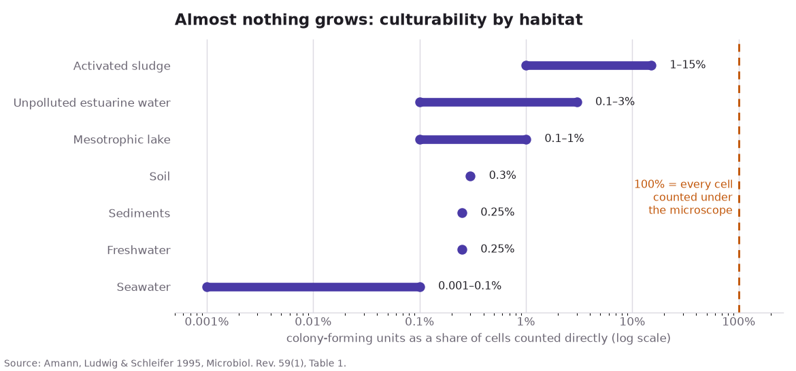
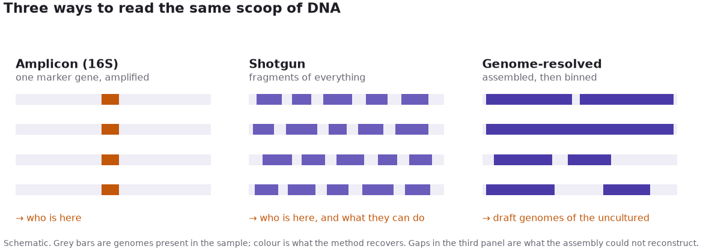
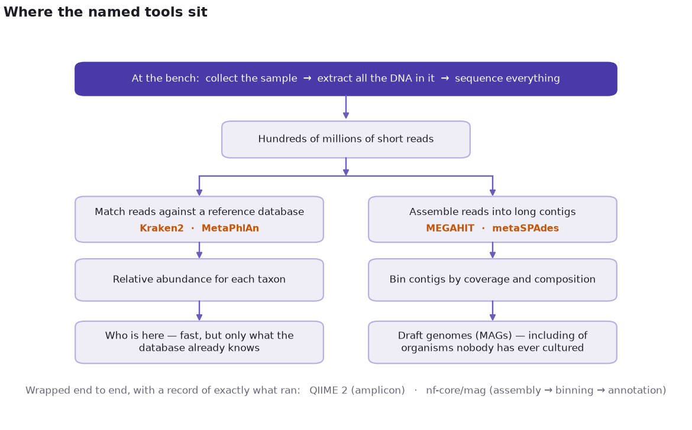

A teaspoon of garden soil holds a billion bacterial cells from thousands of species. Smear it on nutrient agar, incubate it, and you get colonies — a few hundred, from a few dozen kinds. The rest are still in the teaspoon, alive, running chemistry nobody has catalogued, refusing to grow for you. For a century that was the edge of the map: microbiology could study only what it could talk into a dish.
The petri dish was throwing away almost everything
There is a simple way to measure how much the dish misses. Count the cells in a sample directly, under a microscope, then count the colonies the same sample yields on agar, and compare. The two numbers disagree by orders of magnitude, a discrepancy Staley and Konopka named in 1985: the great plate count anomaly.
Amann, Ludwig and Schleifer put numbers on it in 1995, gathering other groups’ paired counts across habitats into one table in order to argue that microbiologists should identify cells without growing them. The chart below is that table. It is not new measurement — it is a literature survey, which is the right instrument for the question, since no single lab plates seawater and soil and activated sludge to a common protocol. The reported shares run from a thousandth of a percent to the low tens of a percent — four orders of magnitude — hence the log scale.

The stake is what any plate-based census means. If agar shows 0.3% of what is in soil, a description of that 0.3% mistaken for a description of the soil gets the place wrong in both directions: organisms that dominate the sample go unmentioned, and rarities that happen to enjoy agar get reported as typical.
Seawater sits at the bottom of the chart, and the reason is not fussiness. A plate is a single guess — one diet, one temperature, one oxygen level, no neighbours — and most microbes decline all four. Guessing better is possible and slow, one organism at a time. The move that opened the field was to stop asking the organism to cooperate at all.
Metagenomics reads the community, not the organism
Take the sample. Extract all the DNA in it, from everything at once, and sequence that. You never isolate anyone: you read a whole community’s pooled genetic material and reconstruct who was there from the sequences. That reframing is the field, and it is called metagenomics.
One detail of the machinery decides everything that follows. A sequencer cannot read a chromosome end to end; it reads short pieces, millions of them at a time. So the DNA is broken up first, and whatever you want to know has to be recovered from the pieces afterwards. What separates the three common designs is how much of the pooled DNA you bother to read, and how hard you work at putting it back together:

- Amplicon (16S) — copy one gene out of the mixture, many times over, and read only that. The gene is part of the ribosome, the protein-building machinery every bacterium carries, so it is present in all of them and differs just enough between species to name them. Cheap; answers who is here.
- Shotgun — skip the target gene and read everything, breaking the pooled DNA at random and sequencing the fragments, which is where the name comes from. You get the other genes too, so the sample also tells you what the community can do.
- Genome-resolved — take those fragments, overlap them into longer stretches, then sort the stretches into per-organism piles until draft genomes fall out, for organisms nobody has cultured.
Each depth had someone willing to argue for it.
Four people who made the invisible readable
None of the three arrived as a technique looking for a use. Each began with somebody insisting that a particular question could be answered without a colony, at a time when that was an odd thing to say. Four names carry most of that argument, and the order is roughly the order the depths appeared in.
- Norman R. Pace — proposed in 1985 that ribosomal RNA genes be sequenced straight from the environment, the sequences standing in for the organisms. Culture-independent microbiology starts here.
- Jo Handelsman — coined metagenomics in 1998, framing the pooled DNA of a soil community as one large genome worth cloning and screening.
- Jill Banfield — with Tyson and colleagues in 2004, reconstructed near-complete genomes from an acid mine drainage biofilm: genome-resolved metagenomics, from a community nobody grew.
- Rob Knight — carried the methods into the human microbiome and planet-scale surveys, and built much of the software everyone else uses.
Which is where the difficulty moved.
The bottleneck moved from the bench to the laptop
One run returns hundreds of millions of short reads, drawn from an unknown number of organisms present in unknown proportions, with no label saying which read came from which. Nothing about that pile is interpretable by eye. The work is now computational, and it splits into two jobs: putting reads back together into longer sequences, and deciding what organism a read or a sequence came from. A handful of tools do most of it.

- Assembly — stitching overlapping reads into longer stretches, called contigs. MEGAHIT does it with a succinct de Bruijn graph — a compact index of every short subsequence in the data — which keeps memory low enough for huge soil samples; metaSPAdes copes better when some organisms are far more abundant than others, so their reads pile up unevenly.
- Taxonomic profiling — deciding who a read belongs to. MetaPhlAn aligns reads to genes known to be unique to one branch of the tree of life; Kraken2 matches exact k-mers — short fixed-length words of DNA — against a reference database, which is less subtle and very fast.
- Workflows — QIIME 2 runs amplicon analysis while recording every result’s provenance; nf-core/mag takes short reads to annotated genomes in a single run of Nextflow, a workflow manager that chains the steps and keeps them reproducible.
Point these at a sample and something appears. Knowing what it isn’t matters as much.
The invisible world was never hiding
None of those limits is a reason to go back to the dish, which answered one question well and discarded almost the whole sample. Metagenomics keeps the sample and returns an answer whose edges you can see — a composite genome you know is a composite, a share you know is a share.
Which is what the teaspoon of soil was owed. The thousands of species in it were never hiding. They were waiting for a method that did not require them to grow.
Further reading
- Staley, J. T. & Konopka, A. (1985). Measurement of in situ activities of nonphotosynthetic microorganisms in aquatic and terrestrial habitats. Annual Review of Microbiology 39:321–346 — the great plate count anomaly.
- Amann, R. I., Ludwig, W. & Schleifer, K.-H. (1995). Phylogenetic identification and in situ detection of individual microbial cells without cultivation. Microbiological Reviews 59(1):143–169 — the source of the culturability figures above.
- Pace, N. R., Stahl, D. A., Lane, D. J. & Olsen, G. J. (1985). Analyzing natural microbial populations by rRNA sequences. ASM News 51:4–12 — the 1985 proposal itself, laid out in full a year later in The analysis of natural microbial populations by ribosomal RNA sequences, Advances in Microbial Ecology 9:1–55. The companion method paper is Lane, D. J., Pace, B., Olsen, G. J., Stahl, D. A., Sogin, M. L. & Pace, N. R. (1985), Rapid determination of 16S ribosomal RNA sequences for phylogenetic analyses, PNAS 82(20):6955–6959.
- Handelsman, J., Rondon, M. R., Brady, S. F., Clardy, J. & Goodman, R. M. (1998). Molecular biological access to the chemistry of unknown soil microbes: a new frontier for natural products. Chemistry & Biology 5(10):R245–R249 — where the word is coined.
- Tyson, G. W., Chapman, J., Hugenholtz, P., Allen, E. E., Ram, R. J., … Banfield, J. F. (2004). Community structure and metabolism through reconstruction of microbial genomes from the environment. Nature 428:37–43.
- Bolyen, E. et al. (2019). Reproducible, interactive, scalable and extensible microbiome data science using QIIME 2. Nature Biotechnology 37:852–857.
- Tools: MEGAHIT, metaSPAdes, MetaPhlAn, Kraken2, QIIME 2, nf-core/mag.
A note on accuracy: every number in this post is transcribed from the primary source cited beside it, and the figures are generated by src/make_figs.py in this post’s directory, which carries the same citations inline. The second and third figures are schematics and plot no data.